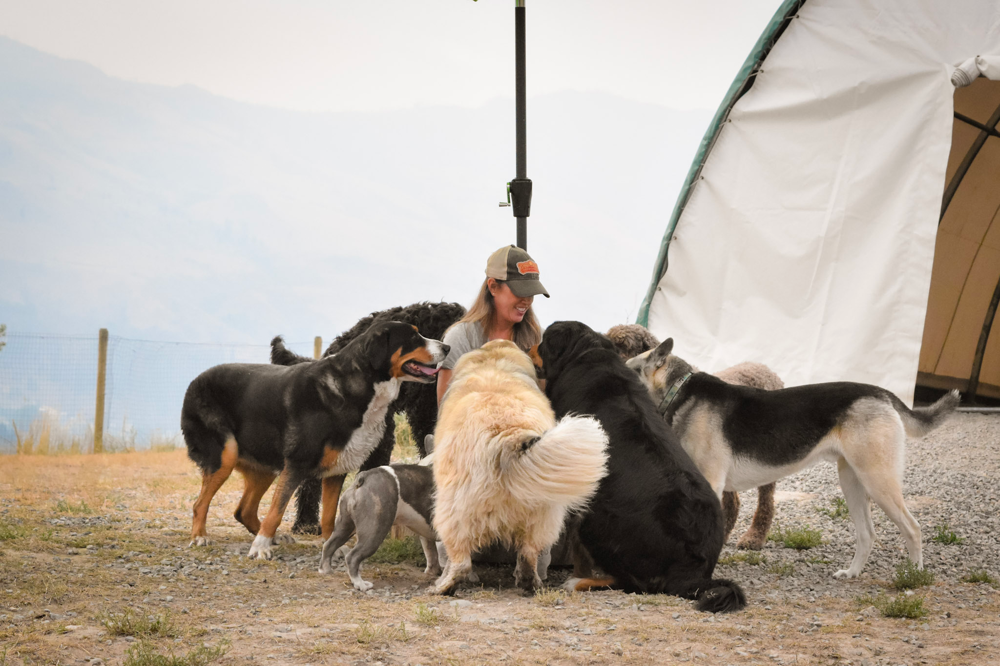

About Us
Cruizin K9 originated when, as a busy pet owner, I realized the need for reliable pet care in Kamloops. With years of experience, I feel very strongly about providing exceptional service for you and your pet. As a lifelong Kamloops resident, I am thrilled to be serving our community doing what I love.
Our main focus is to provide socialization and exercise for your pet when you are unable at our fully fenced, private and exclusive location in Westsyde.
Established in 2010, Cruizin K9 has safely provided over 15,000 group adventures to date and we are looking forward to many more. We are extremely dedicated to your pet’s well being and provide safe transportation to and from the CruizinK9 Pet Adventure Ranch.
With more than 14 years in business, we have discovered the many benefits group outings provide including improved social development and countless friendships.
Before you begin with us, your pet must have the following:
-
Positive social behavior with both dogs and people
-
Proof of up-to-date vaccinations
-
A valid license on collar